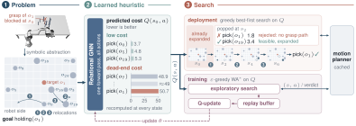
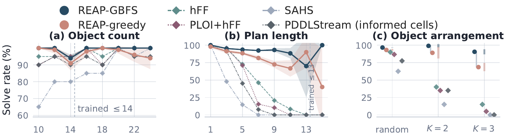

REAP
Learning General Rearrangement Heuristics from Motion-Planner Feedback
Chair of Machine Learning and Reasoning, RWTH Aachen University
Conference on Robot Learning (CoRL) 2026
REAP learns a Q-value function over a simple symbolic abstraction that anticipates which symbolically applicable actions a robot can actually execute. Used as the heuristic of a greedy best-first search, it solves more rearrangement problems than classical and learned baselines, needs about ten times fewer motion-planner queries than classical heuristic search, and generalizes to problems with more objects and longer plans than those seen in training.
Code, trained models, datasets and the baseline reimplementations are released on GitHub.
Abstract.
Robotic rearrangement tasks require planning sequences of actions that fulfill high-level specifications while also being geometrically feasible. Symbolic abstractions make the combinatorial structure of rearrangement tasks tractable, but they usually do not fully capture the geometric constraints that determine which actions a robot can actually realize. These constraints are hard to express in the symbolic model. We propose REAP (Rearrangement with Elicited Action Preconditions), a framework in which a relational graph neural network heuristic is learned over a simple symbolic abstraction. A motion planner serves as a supervisor that elicits the hidden geometric preconditions of the problem during training. Deployed with greedy best-first search, the learned heuristic generalizes out-of-distribution along object count, plan length, and object arrangement, and can be trained jointly on several domains. Compared to classical heuristic search and learning-based baselines, REAP solves more problems, requires roughly an order of magnitude fewer motion-planner queries than comparable methods, and the action it ranks first is geometrically feasible in 94% of sampled states, against 22% for a random choice.
Five Rearrangement Environments.
Adapted from Wang et al., ICAPS 2022.
Adapted from Ait Bouhsain et al., HAL preprint 2025.
From Ait Bouhsain et al., HAL preprint 2025.
Inspired by Kulshrestha & Qureshi, CoRL 2023.
Each video shows a plan found by REAP with greedy best-first search, executed in simulation. All environments use the same architecture and training loop; the PDDL domain, the scene generator, the feasibility check and the hyperparameters are adapted to each environment.
Method.

Simple symbolic abstraction
Each environment is modeled as a PDDL planning problem over grids of cells, with predicates for occupancy, the gripper state and, in 3D stacking, support. The abstraction over-approximates what the robot can do: on open tabletop, 80% of the symbolically applicable actions in the initial states cannot be executed, mostly because neighboring cylinders block the gripper. Whether an action can be executed is decided by a feasibility check, built on inverse kinematics and motion planning, that the symbolic model does not see.
Relational Q-value function
A relational graph neural network takes the state, whose atoms also encode the goal, and outputs in a single pass the value Q(s, a) of every applicable action: the estimated number of actions to the goal after taking a. Since states and goals are sets of atoms, the same network applies to problems with any number of objects.
Training with motion-planner feedback
Q is learned by reinforcement learning, with weighted A* instead of greedy rollouts to guide the exploration: with probability ε, a newly generated node is expanded next regardless of its value. Every expanded action is checked for feasibility, and infeasible actions receive a dead-end target. The learned values thus combine the number of steps to the goal with the feasibility of the actions, without a model of the geometric constraints.
Search at test time
REAP-GBFS is a greedy best-first search on Q that checks only the actions it expands, so the learned values decide which actions are checked first, and verdicts are cached. REAP-greedy instead takes the best action in every state, without backtracking. In both, every action of a plan is checked before it is executed.
Comparison with Baselines.
All methods are evaluated on the same 300 open-tabletop problems, with the same symbolic actions, the same feasibility-check interface and a 300 s cap per problem. REAP-GBFS solves the most problems and needs about ten times fewer motion-planner queries than classical heuristic search. SAHS spends almost all of its queries on computing geometric predicates, BT-h is given the order in which a reference plan moves the cylinders, and PDDLStream solves few problems that require relocation unless an occlusion axiom is written into its domain.
| Method | Solve (%) | MP / plan [med.] | Checks / exp. | Exp./steps [med.] | Time (s) |
|---|---|---|---|---|---|
| REAP-GBFS | 95.9 ± 0.5 | 17.1 ± 4.2 [3.1] | 1.96 | 1.29 [1.00] | 3.9 |
| REAP-greedy | 89.5 ± 1.7 | 5.2 ± 0.7 [3.0] | n/a | n/a | 1.7 |
| BrFS | 56.7 | 148.8 [12.0] | 7.01 | 7.26 [3.00] | 19.5 |
| hFF | 76.7 | 179.0 [1.0] | 5.04 | 3.62 [1.00] | 25.4 |
| SAHS (Kim & Shimanuki, 2019; Kim et al., 2022) | 51.0 | 2937.4 [2857.0] | n/a | 1.37 [1.00] | 68.8 |
| PLOI + hFF (Silver et al., 2021) | 72.3 | 210.7 [2.0] | 4.15 | 8.26 [1.00] | 36.2 |
| PLOI + BrFS | 53.3 | 97.3 [2.0] | 3.18 | 10.70 [1.00] | 18.0 |
| BT-h (Cieślar et al., 2025), given the plan ordering | 81.7 | 28.5 [3.0] | n/a | n/a | 4.5 |
| PDDLStream (Garrett et al., 2020), with occlusion axiom | 64.3 | 23.6 [1.0] | n/a | n/a | 17.2 |
Generalization.
On open tabletop, the policy is trained on problems with up to 14 cylinders and reference plans of up to 13 actions, and evaluated on problems with up to 24 cylinders and plans of up to 15 actions. REAP-GBFS solves 95.9 ± 0.5% of them, and at least 88.3% in every bucket of object count, plan length and arrangement with more than two problems per seed, while REAP-greedy degrades on longer plans and harder arrangements.
Open tabletop: object count, plan length and arrangement

Four further environments
| Environment | Setting | Solve (%) | Mean exp./steps | MP / plan [med.] |
|---|---|---|---|---|
| Confined Shelf | Monotone (in-distribution) | 100.0 ± 0.0 | 1.04 | 8.8 [7.7] |
| Non-monotone, 16 objects (out-of-distribution) | 100.0 ± 0.0 | 1.00 | 11.7 [12.3] | |
| Multi-Level Shelf | In-distribution (1–5 blockers) | 99.3 ± 1.0 | 1.20 | 8.0 [4.0] |
| Out-of-distribution (4–10 blockers) | 100.0 ± 0.0 | 1.11 | 8.7 [8.0] | |
| Access-19 | Single policy, in-distribution (≤ 14 blockers) | 91.8 ± 5.8 | 1.14 | 37.2 [8.3] |
| Two-phase, 72 new 18-blocker layouts | 89.8 ± 2.9 | 1.36 | 102.1 [57.8] | |
| 3D Block Stacking | In-distribution (1–8 blocks) | 96.6 ± 4.8 | 1.10 | 14.0 [3.0] |
| Combined structures, 4–12 blocks (out-of-distribution) | 91.7 ± 2.4 | 2.16 | 85.8 [28.3] |
In Access-19, a single goal-conditioned policy solves 91.8% of the problems with up to 14 blockers, but only 38.9 ± 16.1% of 72 new layouts with 18 blockers. Splitting each problem into extraction and reload, with one policy for each executed in sequence, solves 89.8 ± 2.9% of them. The 18-blocker layouts appear to require a decomposition into subproblems, which the single policy does not learn.
Joint training
One policy trained jointly on open tabletop, the confined shelf and the multi-level shelf (two seeds) solves 95.0 ± 1.3% of the 300 open-tabletop problems, 248 and 249 of the 250 confined-shelf problems, and 85 and 90 of the 90 multi-level shelf problems, so one REAP model can be trained to solve several environments.
Limitations.
REAP is evaluated entirely in simulation: plans that are feasible in simulation transfer to a real arm only insofar as the simulated kinematics and geometry are faithful, and the symbolic state is assumed to be given rather than perceived. Each new environment requires its own simulator, a feasibility check that gives a verdict for each action, and a distribution of training problems. Where the check runs a motion planner online, its queries dominate the cost of training. The actions are restricted to grasping and placing on a discrete grid, which leaves non-prehensile manipulation, contact-rich interaction and articulated objects out of scope. The clearest failure is Access-19, which appears to require a decomposition into subproblems: a hand-designed split into two phases solves it, but a single policy trained end-to-end does not.
BibTeX.
@inproceedings{swoboda2026reap,
title = {{REAP}: Learning General Rearrangement Heuristics from Motion-Planner Feedback},
author = {Swoboda, Daniel and Geffner, Hector},
booktitle = {Proceedings of the Conference on Robot Learning (CoRL)},
year = {2026}
}Acknowledgments.
The research has been supported by the Alexander von Humboldt Foundation with funds from the German Federal Ministry for Education and Research. This project was also funded by the German Federal Ministry of Research, Technology and Space (BMFTR) and the Ministry of Culture and Science of the German State of North Rhine-Westphalia (MKW) under the Excellence Strategy of the Federal Government and the Länder. This project has received funding from the European Research Council (ERC) under the European Union’s Horizon 2020 research and innovation programme (Grant agreement No. 885107). Computations were performed with computing resources granted by RWTH Aachen University under project rwth2080.